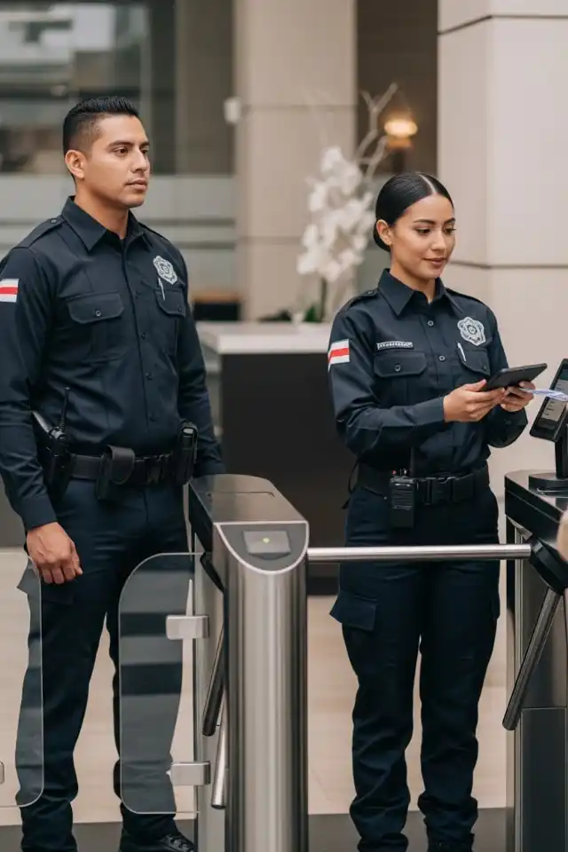
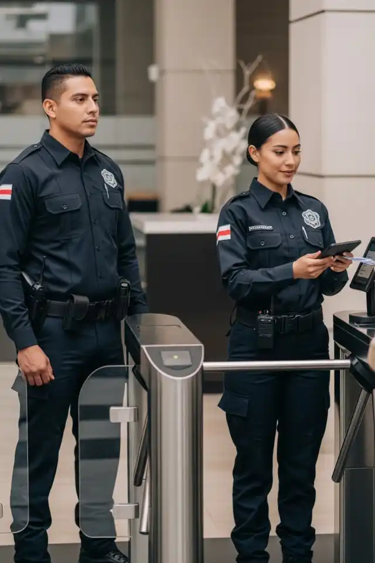

En Este Articulo
La tecnologia de seguridad corporativa esta experimentando una transformacion sin precedentes. La convergencia de inteligencia artificial, Internet de las Cosas, analisis predictivo y automatizacion esta creando sistemas de proteccion mas inteligentes, eficientes y proactivos. Las empresas que adoptan estas innovaciones no solo mejoran su seguridad, sino que optimizan operaciones y obtienen ventajas competitivas significativas.
Inteligencia Artificial y Automatizacion en Seguridad
La inteligencia artificial representa el cambio mas significativo en la industria de seguridad. Los sistemas tradicionales que requerian operadores humanos monitoreando multiples pantallas estan siendo reemplazados por algoritmos capaces de analizar miles de horas de video en tiempo real, identificar amenazas y ejecutar respuestas automaticas.
Reduccion de Falsas Alarmas
Los sistemas con IA pueden distinguir entre amenazas reales y eventos inocuos como animales, cambios de luz o movimiento de vegetacion, eliminando la fatiga de operadores.
Deteccion Inteligente de Amenazas
Los algoritmos de machine learning pueden identificar comportamientos sospechosos que pasarian desapercibidos para operadores humanos: personas merodeando en perimetros, intentos de escalamiento, vehiculos estacionados en zonas prohibidas, o movimientos en horarios no autorizados. El sistema genera alertas solo ante actividad genuinamente sospechosa.
Reconocimiento Facial Avanzado
La biometria facial esta reemplazando credenciales tradicionales en sistemas de control de acceso. Las ventajas incluyen verificacion sin contacto, autenticacion en menos de un segundo, imposibilidad de transferencia de credenciales y alertas automaticas ante personas no autorizadas.
Consejo Profesional
Al implementar reconocimiento facial, asegurate de cumplir con la LFPDPPP mexicana: obtener consentimiento informado, garantizar almacenamiento seguro de datos biometricos y limitar acceso solo a personal autorizado.
Internet de las Cosas y Sensores Conectados
El IoT esta transformando instalaciones en ecosistemas inteligentes donde cada dispositivo comunica, aprende y responde. Sensores de movimiento, detectores de humo, controles de acceso y camaras operan como una red unificada que multiplica la efectividad de cada componente individual.
Ecosistema de Dispositivos Integrados
- Sensores perimetrales inteligentes: Detectan intrusiones mediante vibracion, presion o ruptura de barreras infrarrojas
- Detectores ambientales: Monitorean temperatura, humedad, humo y gases toxicos en tiempo real
- Cerraduras inteligentes: Controlan accesos remotamente con registros detallados de cada entrada
- Iluminacion responsiva: Se activa automaticamente ante deteccion de movimiento sospechoso
Importante Considerar
Cada dispositivo IoT conectado es un potencial punto de entrada para ciberataques. Asegurate de que tu red de seguridad este debidamente segmentada y protegida con protocolos de ciberseguridad robustos.
Ventajas de la Conectividad Total
La integracion IoT permite respuestas coordinadas imposibles con sistemas aislados. Un sensor perimetral puede activar camaras PTZ, encender iluminacion, bloquear accesos y notificar a guardias simultaneamente, todo en milisegundos.
Analisis Predictivo y Videoanailitica Proactiva
Mas alla de reaccionar ante eventos ya ocurridos, los sistemas modernos predicen situaciones de riesgo antes de que escalen. El analisis predictivo utiliza datos historicos, patrones de comportamiento y algoritmos avanzados para anticipar amenazas.
Aplicaciones de Videoanailitica
- Deteccion de aglomeraciones: Alerta cuando densidad de personas supera umbrales seguros
- Analisis de flujo vehicular: Identifica vehiculos circulando repetidamente por perimetros
- Reconocimiento de objetos abandonados: Detecta paquetes o mochilas dejados en areas publicas
- Mapas de calor: Visualizan patrones de trafico para optimizar ubicacion de recursos
Incidentes Prevenidos
Las empresas con sistemas de analisis predictivo reportan una reduccion significativa de incidentes al poder intervenir antes de que las situaciones escalen.
Integracion de Sistemas y Respuesta Automatizada
La tendencia mas poderosa no es ninguna tecnologia individual, sino la integracion de multiples sistemas que responden coordinadamente ante amenazas. Las plataformas de gestion unificada orquestan todos los componentes de seguridad en una respuesta sincronizada.
Escenario de Respuesta Automatizada ante Intrusion
Deteccion
Camara con IA detecta persona escalando barda perimetral en horario no autorizado
Iluminacion
Sistema activa automaticamente luces de alta intensidad en zona especifica
Seguimiento
Camara PTZ gira hacia ubicacion y realiza seguimiento automatico del intruso
Disuasion
Sistema de audio emite mensaje de advertencia pregrabado
Notificacion
Alerta simultanea a centro de monitoreo, guardias y app movil de gerencia
Bloqueo
Puertas de acceso a areas criticas se bloquean automaticamente
Este nivel de coordinacion multiplica efectividad de respuesta y reduce tiempos de reaccion de minutos a segundos, marcando la diferencia entre prevencion exitosa y perdidas significativas.
Ciberseguridad en Sistemas de Seguridad Fisica
Paradojicamente, mientras la tecnologia mejora seguridad fisica, tambien introduce vulnerabilidades ciberneticas. Camaras IP, sistemas de control de acceso en red y DVRs conectados a internet son objetivos atractivos para atacantes sofisticados.
Evita Este Error Critico
Nunca dejes contrasenas predeterminadas en camaras IP o DVRs. Estos dispositivos son escaneados constantemente por hackers y son frecuentemente usados como puerta de entrada a redes corporativas.
Amenazas Ciberneticas a Sistemas de Seguridad
- Deshabilitacion de vigilancia: Atacantes pueden apagar camaras previo a robo fisico
- Espionaje corporativo: Acceso no autorizado a video en vivo de operaciones sensibles
- Punto de entrada: Dispositivos comprometidos usados para infiltrar redes internas
- Ransomware: Bloqueo de acceso a grabaciones criticas para extorsion
Mejores Practicas de Ciberseguridad
- Segmentacion de redes: Sistemas de seguridad en VLAN separada de red corporativa
- Actualizacion de firmware: Mantener todos los dispositivos con parches actualizados
- Autenticacion multifactor: Para acceso remoto a sistemas de vigilancia
- Auditorias periodicas: Evaluaciones regulares de vulnerabilidades
Drones y Robotica en Vigilancia
Las empresas con instalaciones extensas estan incorporando drones autonomos y robots de patrullaje para vigilancia perimetral. Estas tecnologias ofrecen capacidades que serian imposibles o prohibitivamente costosas con personal humano.
Capacidades de Drones de Seguridad
- Cobertura de kilometros de perimetro en minutos vs. horas con guardias a pie
- Deteccion de intrusos mediante vision termica en oscuridad total
- Respuesta automatica a alertas de sensores para verificacion visual inmediata
- Inspeccion de infraestructura (techos, torres, tanques) sin riesgo para personal
Requisitos Legales en Mexico
La operacion de drones comerciales requiere permisos de la Direccion General de Aeronautica Civil (DGAC) y certificacion de pilotos. Consulta con expertos antes de implementar programas de vigilancia aerea.
Robots de Patrullaje
Los robots autonomos de seguridad ya patrullan almacenes, centros comerciales y campus corporativos. Equipados con camaras 360 grados, sensores de movimiento y capacidad de comunicacion bidireccional, complementan la vigilancia humana cubriendo rutas extensas sin fatiga.
No Esperes a que tu Sistema Quede Obsoleto
Cada dia sin tecnologia actualizada es un dia de vulnerabilidad. Nuestros expertos evaluan tu infraestructura actual y te muestran exactamente que tecnologias necesitas segun tu perfil de riesgo.
Consulta Sin CompromisoComparativa de Tecnologias de Seguridad
| Tecnologia | Beneficio Principal | Aplicacion Ideal |
|---|---|---|
| IA en CCTV | Deteccion automatica de amenazas | Instalaciones con multiples camaras |
| IoT Integrado | Respuesta coordinada automatica | Edificios corporativos inteligentes |
| Analisis Predictivo | Prevencion proactiva de incidentes | Retail, eventos masivos |
| Reconocimiento Facial | Control de acceso sin contacto | Oficinas, areas restringidas |
| Drones de Vigilancia | Cobertura de grandes perimetros | Plantas industriales, almacenes |
| Robots de Patrullaje | Monitoreo continuo sin fatiga | Centros comerciales, campus |
Tecnologias de Seguridad en Accion
 



Conclusion: Adopcion Estrategica de Tecnologia
No todas las empresas requieren implementar cada innovacion mencionada. La clave esta en un analisis estrategico que considere perfil de riesgo especifico, ROI esperado, integracion con sistemas existentes y capacidad del equipo para operar nuevas tecnologias.
La transformacion digital de la seguridad no es una opcion sino una necesidad competitiva. Las empresas que adoptan estas innovaciones inteligentemente no solo protegen mejor sus activos, sino que obtienen eficiencias operativas y datos valiosos para la toma de decisiones.
El futuro de la seguridad es inteligente, integrado y proactivo. La pregunta no es si adoptaras estas tecnologias, sino cuando lo haras.
Preguntas Frecuentes
La inteligencia artificial aplicada a videovigilancia es la innovacion mas impactante. Permite deteccion automatica de amenazas, analisis de comportamiento en tiempo real y reduccion de falsas alarmas hasta en un 90%. Ademas, libera a operadores humanos para enfocarse en respuesta ante incidentes reales en lugar de monitoreo pasivo.
El Internet de las Cosas permite conectar todos los dispositivos de seguridad en una red inteligente. Camaras, sensores, controles de acceso e iluminacion operan coordinadamente, generando respuestas automatizadas ante amenazas. Un sensor perimetral puede activar camaras, encender luces y bloquear accesos simultaneamente en milisegundos.
Los drones autonomos son altamente efectivos para vigilancia perimetral de grandes instalaciones como plantas industriales, almacenes o desarrollos inmobiliarios. Pueden cubrir kilometros en minutos con camaras termicas que detectan intrusos en oscuridad total. En Mexico requieren permisos de la DGAC y certificacion de pilotos.
Los sistemas de seguridad conectados pueden ser vulnerables a ciberataques. Hackers pueden deshabilitar vigilancia antes de robos fisicos, espiar operaciones corporativas mediante camaras comprometidas, o usar dispositivos como punto de entrada a redes internas. Proteger estos sistemas con segmentacion de red, contrasenas robustas y actualizaciones regulares es critico.
El ROI varia segun el perfil de riesgo de cada empresa. Sin embargo, la integracion de sistemas existentes con una plataforma de gestion unificada frecuentemente ofrece el mejor retorno inmediato, ya que potencia inversiones previas sin requerir reemplazo total de infraestructura.
2025 Es el Ano de Actualizar tu Seguridad
No dejes que tu empresa sea vulnerable con tecnologia del pasado. Somos especialistas en integracion de IA, IoT y sistemas inteligentes. Evaluacion gratuita de tu infraestructura actual con recomendaciones personalizadas.
Actualiza tu Sistema de Seguridad